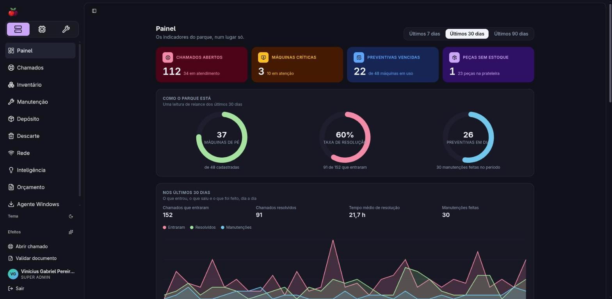
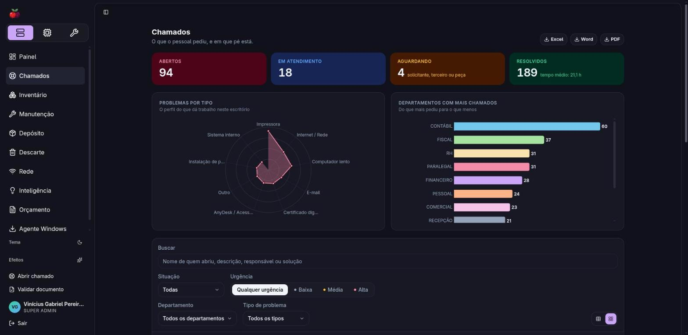
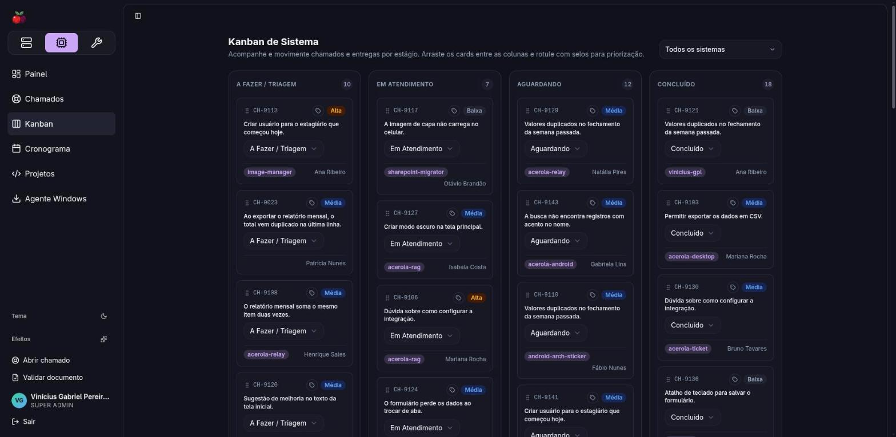
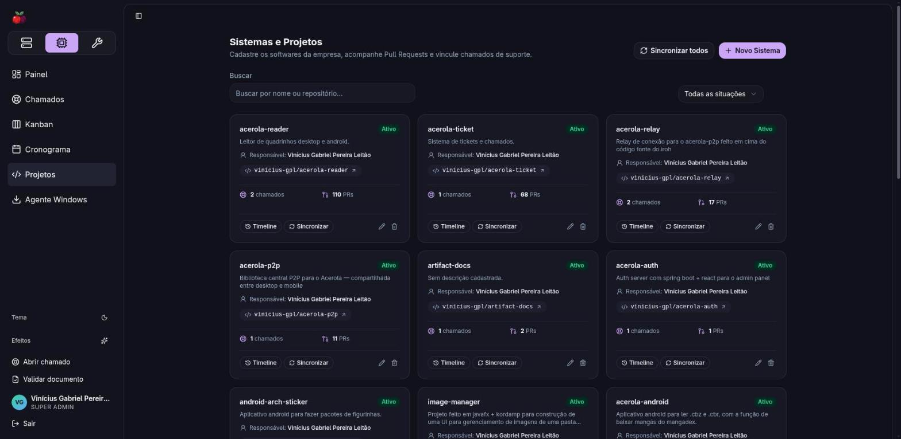
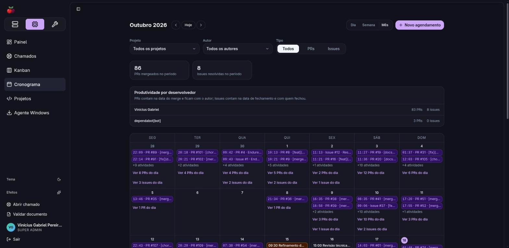

Acerola Ticket
A TI da empresa num lugar só.
O parque inteiro, de relance.

01 — Chamados

Todo pedido vira chamado.
02 — Kanban

Da triagem ao concluído.


Cada sistema ligado ao
GitHub
: PRs, issues e chamados no mesmo cronograma.
Acesso por módulo
Agente Windows com auto-update
Relatórios em Excel, Word e PDF
Acerola Ticket
Infra. Sistema. Manutenção.